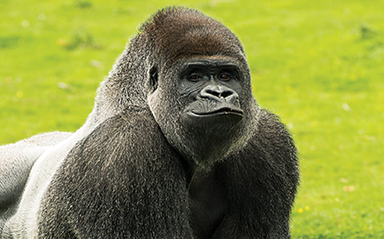

GORILLA
Gorillas are large and powerful primates that live in the forests of central Africa. They are closely related to humans and are known for their intelligence and social behaviour.
Gorillas are mainly herbivores and eat leaves, stems, fruit and other plant material. They spend much of their day searching for food and travelling through their habitat.
Gorillas live in family groups led by a dominant male called a silverback. Despite their great strength, gorillas are generally peaceful animals.
WHERE WILL YOU FIND THEM
The gorillas are on the left side of the park, beside the blue stream and just above the Monkey Trail.